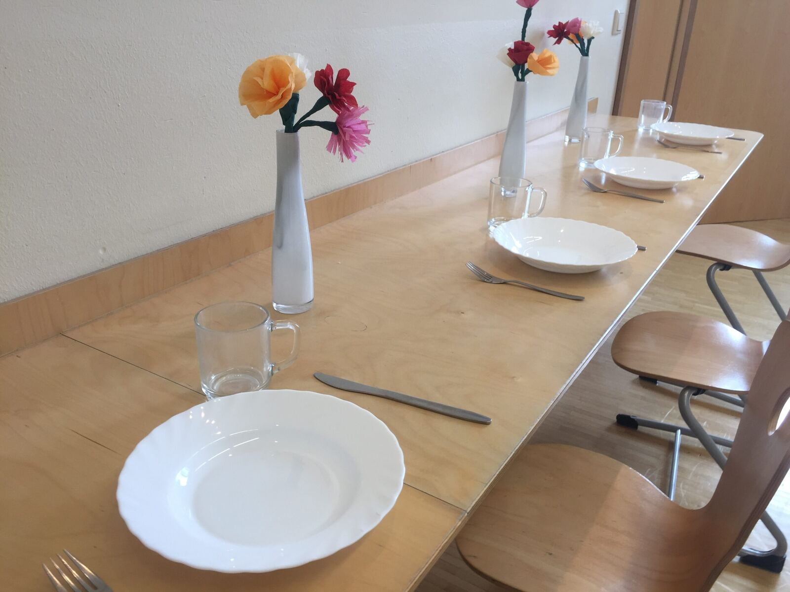

Kreativraum
Freizeitbereich der Hortkinder, in dem eine Puppenecke, eine Bauecke, ein Piratenausguck, mehrere Spielteppiche, ein Billardtisch und ein Kreativbereich mit unterschiedlichsten Materialien zur Verfügung stehen.

Nach der Schule ankommen, Hausaufgaben mit Unterstützung erledigen und Freizeit selbst gestalten – von 6:45 bis 18:00 Uhr.
Den Kinderhort besuchen Kinder ab der Einschulung. Gerne begleiten wir die Kinder über die Grundschulzeit hinaus. Wir sind offen für alle Schulformen, wie z. B. Mittelschulen, Realschulen, Gymnasien sowie auch Förderschulen. Jedes Kind darf den Kinderhort so lange besuchen, wie es möchte und es seiner Entwicklung angemessen ist.
Während der Schulzeit von 6:45 bis 8:00 Uhr und vom jeweiligen Unterrichtsende bis 18:00 Uhr. Während der Schulferien, in denen der Hort geöffnet ist, können die Kinder ganztags durchgängig von 6:45 bis 18:00 Uhr betreut werden. Eltern buchen die Zeiten, die sie für die Betreuung ihres Kindes benötigen.
Zwei Köchinnen bereiten täglich in der hauseigenen Küche des Hortes frisch und aus regionalen Zutaten ein kindgerechtes warmes Mittagessen nach den neuesten ernährungswissenschaftlichen Grundsätzen zu.
Freizeitbereich der Hortkinder, in dem eine Puppenecke, eine Bauecke, ein Piratenausguck, mehrere Spielteppiche, ein Billardtisch und ein Kreativbereich mit unterschiedlichsten Materialien zur Verfügung stehen.

Nach Alter und Klassenstufen getrennt fertigt jedes Kind hier eigenständig seine Hausaufgaben an. Jedes Kind erhält die Hilfe und Unterstützung, die es für seine Aufgaben benötigt. Hier werden die Hausaufgaben jedes Kindes von den Erziehern korrigiert und auf Vollständigkeit überprüft.

Hier hat jedes Kind seinen eigenen Spind für Büchertasche und persönliches Eigentum. Im Spielflur gibt es eine Bibliothek mit Büchern für jedes Lesealter, eine gemütliche Lesetreppe, einen Spielbereich mit Spieltischen und einen Tischkicker.

Im Bistro nehmen die Kinder täglich nach der Schule in entspannter Atmosphäre gemeinsam mit ihren Freunden ein leckeres frisch gekochtes Mittagessen ein, das in unserer hauseigenen Küche zubereitet wurde.

Hier spielen, turnen und toben die Kinder. Sie können diesen Raum bei gezielten Angeboten und in ihrer Freizeit nutzen.

Dieser Raum steht ganz im Zeichen der Ruhe und Entspannung. Hier können die Kinder auf dem Wasserbett träumen, unter dem Lichtwasserfall entspannen und auf einer Sofalandschaft die Farbreflexe der Wassersäulen beobachten. Regelmäßig können Kinder in diesem Raum bei Traumreisen und autogenem Training mitmachen.

Handwerkliche und gestalterische Aktionen finden regelmäßig im Werkraum statt.

Kinder ab der 6. Klasse haben hier einen eigenen gemütlichen Bereich zum Chillen.
Herzlich Willkommen bei unserem virtuellen Rundgang! Klicken Sie auf ein Bild, um es groß anzusehen.
Wir betrachten jedes Kind stärkenorientiert. Wir fördern die Selbstständigkeit der Schulkinder durch unser gruppenübergreifendes Konzept, das den Kindern die Möglichkeit gibt, selbst zu bestimmen, wo und mit wem sie spielen oder wie sie ihre Freizeit gestalten. Altersübergreifende Kontakte zu Jüngeren und Älteren stärken die Kinder in Verantwortungsübernahme, Rücksicht und Eigenverantwortlichkeit. Zahlreiche Partizipationsmöglichkeiten zeigen den Kindern, wie sie Einfluss auf ihren Alltag im Kinderhort nehmen und diesen selbst mitbestimmen können, z. B. in Kinderkonferenzen, Kinderbefragungen und Gruppengesprächen mit den Erziehern.
Unsere Fachkraftquote beträgt 100 Prozent, das heißt, dass die Hortkinder ausschließlich von ausgebildeten, staatlich anerkannten Erziehern betreut werden. Wir sind Ausbildungsstätte und beschäftigen regelmäßig Studierende, die sich in der Ausbildung zum Erzieher befinden.
Wir pflegen eine enge Zusammenarbeit mit den Schulen unserer Hortkinder – zum Beispiel beim Besuch des Hortes auf dem Adventszauber der Josefschule.
Wir sind offen für alle Schulformen: Grundschulen, Mittelschulen, Realschulen, Gymnasien sowie Förderschulen.
In den Schulferien hat der Hort von 6:45 bis 18:00 Uhr geöffnet. Die Kinder können entsprechend der von den Eltern gebuchten Ferientage und Ferienstunden den Hort besuchen. Die Schließtage des Hortes betragen maximal 30 pro Jahr.
Kinderkrippe, Kindergarten und Kinderhort haben gleiche Ferientage.
Im Hort erhält jedes Kind ein Mittagessen. Falls Ihr Kind am Nachmittag noch einmal Hunger bekommt, ist es ratsam, eine Brotzeit und eine Trinkflasche mit Wasser mitzuschicken.
Die Hausaufgabenzeit im Hort ist ein fester Bestandteil des Tages. Sie beginnt für alle Kinder zur gleichen Zeit. Mit Ihrem Kind gehen alle anderen Kinder gemeinsam als Gruppe in die Hausaufgabenzeit. Dadurch sind die Hausaufgaben für jedes Kind selbstverständlich und wichtig.
Die von Ihnen gebuchten Stunden stellen die Grundlage für die Förderung der Kita durch den Freistaat Bayern dar und müssen auch in diesem Umfang genutzt werden.
Unsere Mindestbuchungszeit beträgt 4 bis 5 Stunden, somit ist die Hausaufgabenzeit Bestandteil des Hortalltages. Ausnahmen bilden hier wichtige Arzttermine.
Bitte geben Sie uns in diesem Fall telefonisch oder per E-Mail Bescheid – am einfachsten mit unserer vorbereiteten Krankmeldung per E-Mail.
Bei uns im Hort gibt es, abgesehen von der Hausaufgabenzeit, keine festen Gruppen. Die Kinder suchen sich ihre Spielbereiche und -partner selbst. Jeder Bereich ist mit einem Erzieher besetzt. So stehen den Kindern jederzeit alle Bereiche, wie etwa Garten oder Kreativraum, zur Verfügung.
Das KinderhortABC finden Sie in unserem Downloadbereich – mit allen wichtigen Infos von A bis Z.
In allen Abteilungen des Hauses haben wir an maximal 30 gleichen Tagen im Jahr geschlossen.
| Wann? | Wir haben geöffnet bis … | Erster Schließtag | Letzter Schließtag | Wir öffnen wieder am … | Schließtage |
|---|---|---|---|---|---|
| Herbstferien | 30.10.2026 | 02.11.2026 | 03.11.2026 | 04.11.2026 | 02 |
| Weihnachten | 23.12.2026 | 24.12.2026 | 08.01.2027 | 11.01.2027 | 07 |
| Fasching | 05.02.2027 | 08.02.2027(Rosenmontag) | 09.02.2027(Faschingsdienstag) | 10.02.2027 | 02 |
| Ostern | 24.03.2027 | 25.03.2027 | 30.03.2027 | 31.03.2027 | 02 |
| Pfingsten | 14.05.2027 | 18.05.2027 | 18.05.2027 | 19.05.2027 | 01 |
| Pfingsten | 26.05.2027 | 28.05.2027 | 28.05.2027 | 31.05.2027 | 01 |
| Sommerferien | 06.08.2027 | 09.08.2027 | 27.08.2027 | 30.08.2027 | 15 |
| Schließtage gesamt | 30 | ||||
Damit Sie rechtzeitig Ihre Urlaubspläne schmieden können: Kinderkrippe, Kindergarten und Kinderhort haben die gleichen Schließtage. Ferienplan als PDF herunterladen · Original-Aushang ansehen